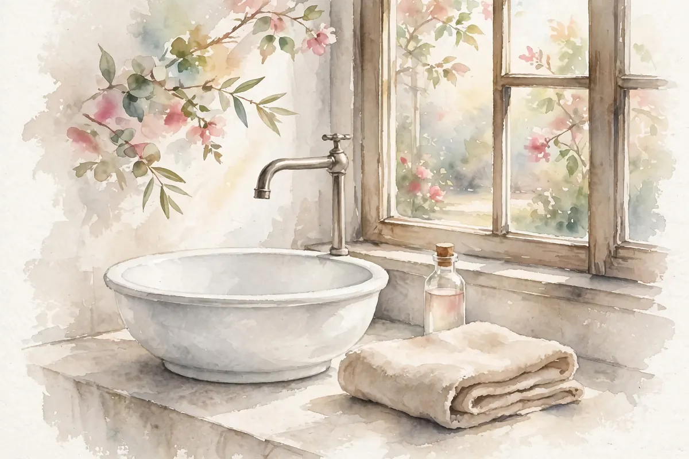
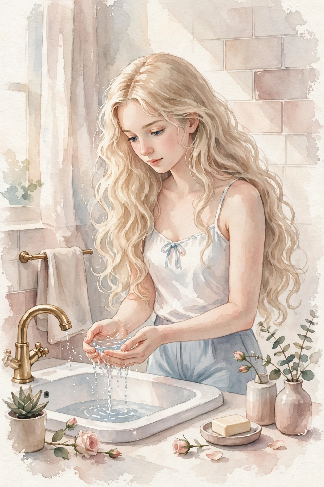

朝の洗顔、する・しないの判断軸

「朝は洗顔料を使ったほうがいいんですか、水だけでもいいんですか」。施術のお客様からもよく聞かれる質問です。答えは人によって違いますし、同じ人でも季節や前夜の過ごし方で変わります。この記事では、どちらが正しいかではなく、自分の朝の状態を見て決めるための判断軸を整理します。
朝の顔に付いているものを確認する
寝ている間も、汗や皮脂は出ています。さらに、前夜に塗ったクリームなどのケアアイテムが、朝まで残っていることもあります。起きたらまず、手のひらで額や鼻まわり、頬をそっと触ってみてください。ぬるつきがあるか、べたつきがあるか、さらっとしているか。その日の朝の状態は、その日の手触りが教えてくれます。
夏の暑い夜や、暖房の効いた部屋で寝た朝は、汗の量が増えがちです。逆に、乾燥する季節の朝は、さらっとしている日も多いでしょう。「いつも同じ」ではなく「今朝はどうか」で考えるのが、判断の出発点です。
前夜のケアの内容も材料になる
前夜に重めのクリームを塗った日と、軽いケアで済ませた日では、朝の残り方が違います。前夜の仕上げがしっかりした日は、朝に洗顔料を使う選択が合うこともありますし、軽い日は水やぬるま湯で流すだけ、という日があっても構いません。前夜と朝は、ひと続きの流れとして考えるのがおすすめです。
寝具との接触も見逃せません。枕カバーの状態や、髪が顔にかかる寝方をしているかどうか。朝の顔の状態は、寝ている間の環境の写しでもあります。気になる日が続くなら、まず枕カバーの交換頻度を見直すのも一つの方法です。
迷ったら「部分ごと」に考える
顔全体を一律に考える必要はありません。皮脂の出やすい額や鼻まわりは洗顔料を使い、頬は流すだけにする、といった部分ごとの使い分けもできます。自分の顔のどこがどういう状態かを知っていると、洗う・洗わないの判断が具体的になります。
なお、洗顔料を使う日は、その商品の表示にある使い方を守ることが基本です。洗ったあとに違和感が続く場合は使用をやめ、気になるときは皮膚科などの専門家に相談してください。朝の洗顔は、決まった正解を探すものではなく、自分の状態を読む練習だと思っています。
季節で切り替えの時期を決めておく
朝の洗顔の判断は、季節の切り替えと一緒に見直すのがおすすめです。汗をかきやすい季節は洗顔料を使う日が増え、乾きやすい季節は流すだけの日が増える、というように、自分の傾向が見えてきます。傾向が分かれば、「この季節の平日はこうする」という自分の型が作れます。
型があっても、その日の状態が優先です。寝汗をかいた朝、暖房の強い部屋で寝た朝は、型と違う選択をして構いません。判断軸を持つことと、柔軟であることは、矛盾しません。軸があるからこそ、外れた日の理由も考えられるのです。
判断に迷う日が続く場合は、1週間だけ記録を付けてみる方法もあります。「洗顔料を使った日」「流すだけの日」と、その日の朝の手触りを短くメモするだけです。記録がたまると、自分の朝のパターンが見えてきます。気温や湿度、前夜の過ごし方との関係も、なんとなく分かってくるはずです。
大切なのは、記録そのものより「朝の顔を観察する習慣」です。観察が習慣になれば、記録がなくても判断できるようになります。朝の洗顔は、1日のケアの入口です。入口で自分の状態を知ることが、その日全体のケアの精度を上げます。
朝の洗顔を考えるうえで、もうひとつ材料になるのが「前日の過ごし方」です。屋外で汗をかいた日の翌朝と、室内で過ごした日の翌朝では、朝の顔の状態が違います。前日の記憶も、判断の材料に加えてください。
洗顔料を使う日は、その後の保湿までの流れを短くすることも大切です。洗ってから時間を空けると、乾燥を感じやすくなります。洗う、付ける、仕上げるを一続きの流れとして、洗面所に立つ時間を設計しておくと、朝の忙しさの中でもぶれません。
朝の判断は、小さな観察の積み重ねです。完璧な正解を求めるより、自分の顔の「いつもの状態」を知ること。その知る作業こそが、朝の洗顔の本当の役割だと感じています。

セラフィナ「朝の顔は、昨夜の自分からの手紙みたいなものだね。今朝の手触りで決めてみよう」